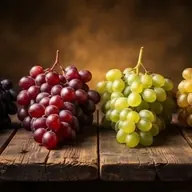
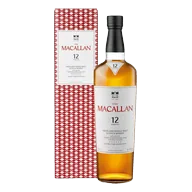
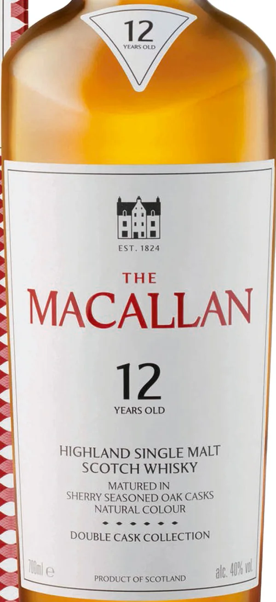
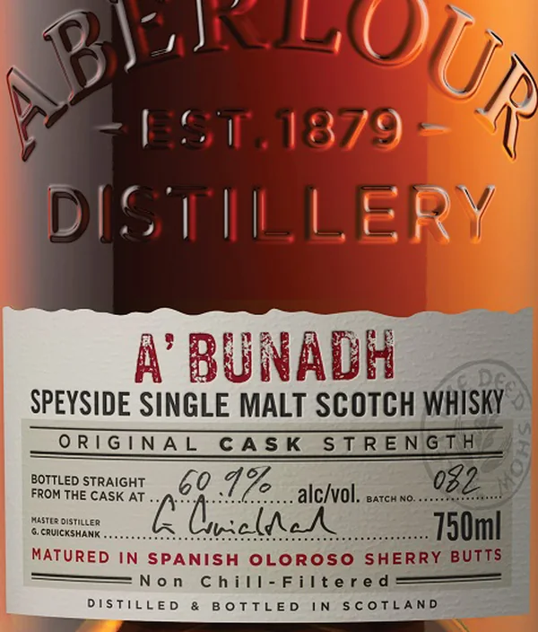
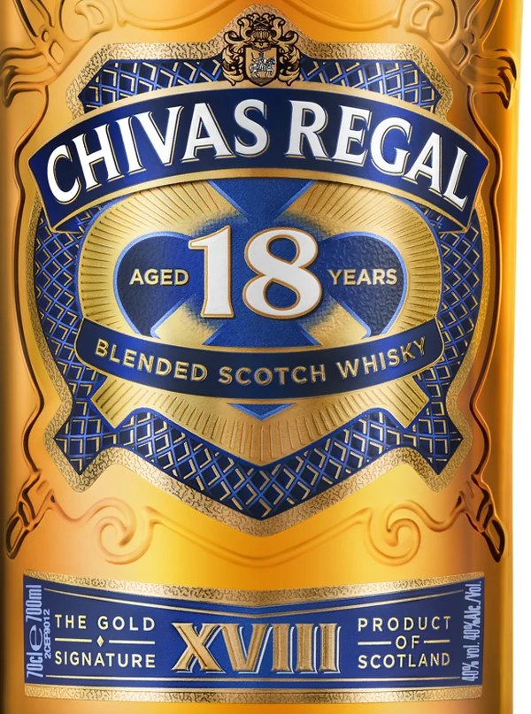
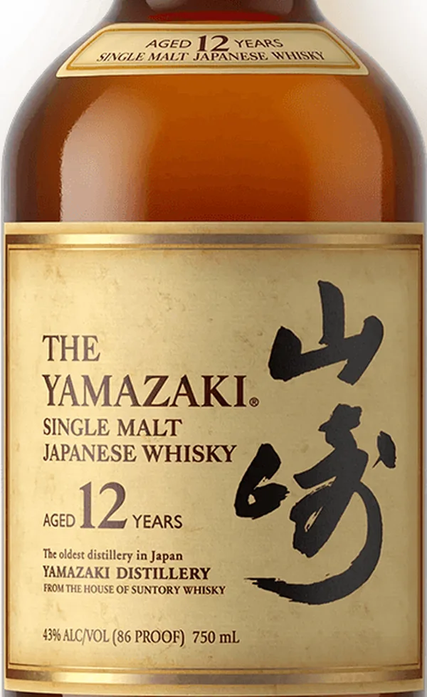
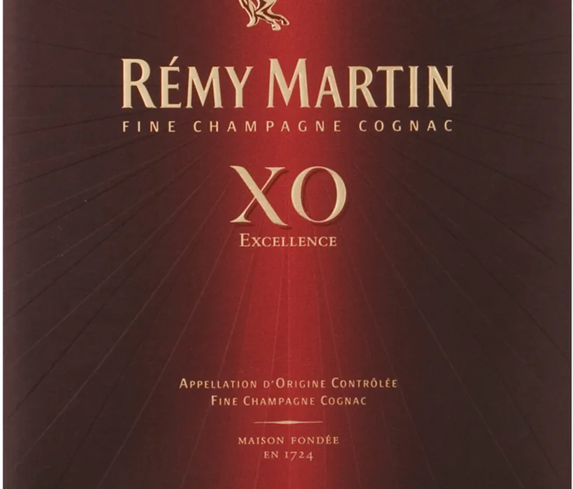
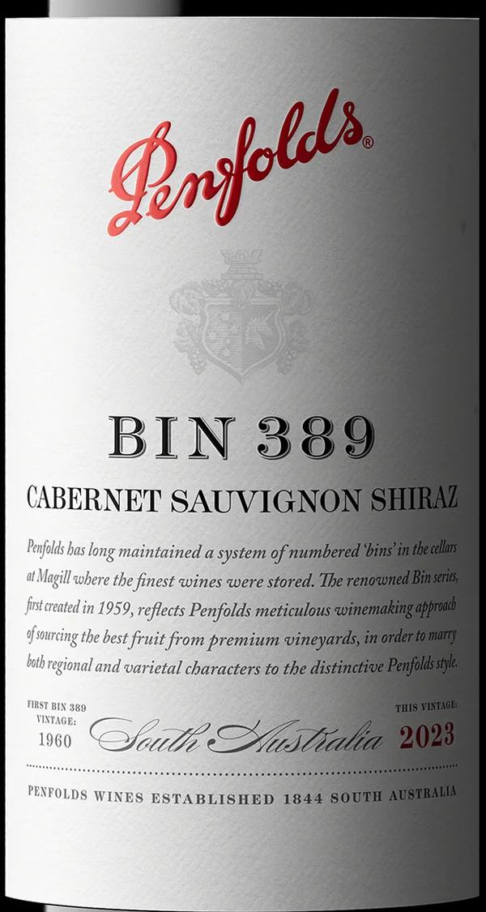
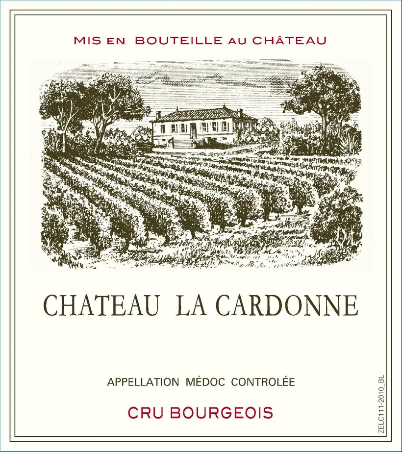
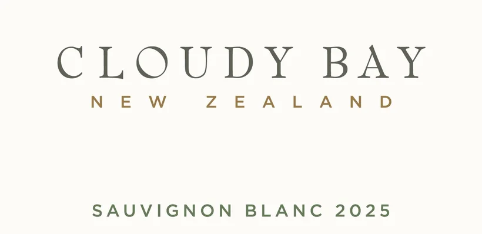

第一次來嗎？照 1 → 6 的順序看，看完一章就按右上角的圓圈打勾。
每張卡下面的小標籤是包裝上會看到的英文，點一下就看得到中文意思和跟客人怎麼說。
先學會看懂一瓶威士忌的包裝：它是哪一種、放了幾年、用什麼桶，味道就猜得出來。
看完會分得出單一麥芽、調和、穀物威士忌；記住「3 年、40%」規定和蘇格蘭六大產區。
看完會知道威士忌怎麼做出來；看懂泥煤、單桶、小批次、ABV、Proof 這些字。
看完會看到桶名就說得出味道（雪莉桶＝果乾、波本桶＝香草）；後半是 139 種桶的查詢表，遇到再查。
可以做加烈酒、雪莉、波特、天使的分享、冷凝過濾、泥煤……每篇有一句話答案、流程、數字、跟客人怎麼說，還列出本店哪些酒這樣做。商品卡上虛線底線的字也點得開。
查詢用・另開頁面看完會分得出三得利和 Nikka、認得水楢桶、知道怎麼分辨真正的日本威士忌、噶瑪蘭產品線。
從葡萄怎麼變成酒開始，再學看懂酒標，最後照門市陳列認識歐洲、美洲、澳紐三區。
看完會知道紅、白、粉紅、氣泡、甜酒怎麼做；冷氣候和熱氣候的味道差在哪。

看完會酒標上寫品種時，說得出這個品種是什麼味道。
看完會看懂 AOC、DOCG、Grand Cru、Reserva，知道這瓶酒在產區裡是哪個等級。
看完會分得出舊世界（歐洲）和新世界；知道門市為什麼分歐洲、美洲、澳紐三區陳列。
可以做照門市陳列分歐洲、美洲、澳洲・紐西蘭，每個產區有地圖和本店酒款小圖，點了開商品卡；可篩紅酒／白酒。
查詢用・另開頁面看完會波爾多、勃根地、香檳、托斯卡尼、皮蒙各是什麼風格，本店有哪些酒。
看完會認識加州納帕谷、加拿大冰酒、智利和阿根廷的代表酒。
看完會澳洲＝希哈（Shiraz）大國、紐西蘭＝白蘇維濃與黑皮諾。
看完會分得出香檳和氣泡酒；看懂 Brut、白中白、年份；記住本店香檳品牌與預算推薦、櫃檯話術。
可以做三個問題推得準、預算與場景推薦、品牌地圖、客人常問、萬用話術。
查詢用・另開頁面看完會看、聞、嚐三步驟；侍酒溫度、醒酒、酒杯、保存與搭餐。
白蘭地、高粱、清酒梅酒、琴酒龍舌蘭等，每一種先懂「怎麼做」和「等級怎麼分」。
看完會VS、VSOP、XO 差在哪；干邑六大產區；軒尼詩、馬爹利、人頭馬、路易十三的差別。
看完會香型是什麼、固態發酵怎麼做；金門、馬祖、台酒的差別。
看完會純米、吟釀、大吟釀怎麼分；精米步合的數字怎麼看；梅酒的種類。
看完會每一種烈酒怎麼做、怎麼喝；經典調酒怎麼配。
把前面學的變成一句話：先問客人三個問題，再推薦；客人問免稅額度也答得出來。
看完會用三個問題找出客人要什麼；最常被問的十題；不要講錯的五件事。
約 4 分鐘・4 個小節看完會用三個問題收斂推薦；客人怎麼說你怎麼推；一分鐘介紹範例。
約 4 分鐘・4 個小節看完會台灣入境每人 1.5 公升；各國帶酒額度；轉機液體與 STEB 免稅袋；十個刁鑽問題怎麼答。
像字典一樣，不用從頭看。客人問「這個牌子是什麼」「這支有什麼特色」時再來查。
看完會55 個品牌的產區、特色與品牌故事。
查詢用・58 個小節看完會284 支商品的官方建議話術，照著講就對。
查詢用・284 個小節看完會74 家酒廠的蒸餾器、發酵、招牌工藝，最後一欄「風味結果」可以直接跟客人講。
查詢用・12 個小節看完會百齡罈、起瓦士、約翰走路、皇家禮炮等 12 個品牌的故事與特色。
看完會94 份原廠／代理商的單品說明與商訓講義。
查詢用・94 個小節看完前面幾步，用圖再複習一次，記得更牢。
看完會產區地圖、泥煤有多重、蒸餾器長怎樣、干邑等級階梯、杯子怎麼選。
約 5 分鐘・10 個小節看完會用「因為→所以」把各章串起來，點一下就能跳到那支酒。
約 5 分鐘
可以做看酒瓶猜品名、記憶口訣、F 特色・A 優點・B 好處；同品牌對照一眼看出差在哪，還能把商品做成記憶卡存到相簿。
每天 10 張・另開頁面拿本店真的在賣的商品，一個字一個字對照。點圖上的紅框或下面的編號，兩邊會一起亮起來；點圖片空白處可以放大看。每一課最後有「跟客人這樣說」，可以直接照講。

單一麥芽：麥卡倫 12 年雙雪莉桶Single Malt・8 個字酒廠 1824 年創立。
瓶子裡最年輕的酒，至少在橡木桶放了 12 年。
同一間酒廠、只用發芽大麥做。麥卡倫在斯貝賽，斯貝賽屬於高地大區，所以酒標寫 Highland。
Sherry seasoned＝桶子先裝過雪莉酒「養桶」。官方說法是美國橡木和歐洲橡木兩種雪莉桶。
沒有加焦糖色，顏色全部來自橡木桶。
麥卡倫的系列名稱，指上面說的兩種雪莉桶。
℮ 是歐盟的容量標示記號，不用解釋給客人。
vol.＝體積百分比，跟 ABV 同義。

原酒：亞伯樂 A'bunadhCask Strength・10 個字這段是瓶身玻璃浮雕。
蓋爾語，意思是「原始、起源」。
產區是斯貝賽，同一間酒廠只用大麥做。
出桶後不加水稀釋，所以度數很高。
數字是手寫的：每一批度數都不一樣，以酒標為準。
每一批味道略有不同，收藏的客人會看批號。
這張是美國版 750ml；本店販售的容量以實品為準。
Butt＝約 500 公升的大雪莉桶；Oloroso 是一種雪莉酒。
保留較多油脂與香氣；加冰或加水變霧霧的是正常的。

調和威士忌：起瓦士 18 年Blended Scotch・8 個字調和裡最年輕的酒至少 18 年。
把多間酒廠的麥芽威士忌和穀物威士忌調在一起，口感平衡順口。
起瓦士 18 年的款名，不是等級。
X＝10、V＝5、III＝3。
側邊直排的小字。
側邊直排的小字。

日本威士忌：山崎 12 年Japanese Whisky・7 個字依日本洋酒酒造組合的標示基準，要在日本糖化、發酵、蒸餾、熟成 3 年以上並裝瓶，才可以寫 Japanese Whisky。
最年輕的酒至少 12 年。
山崎 1923 年建廠，是日本第一間麥芽威士忌蒸餾所。
Proof 除以 2＝酒精 %。美國版是 750mL；本店卡上是 700ml。
日本客人一眼就認得。

干邑：人頭馬 XO（外盒）Fine Champagne Cognac・7 個字只用干邑最好的兩區：大香檳區＋小香檳區，大香檳區至少一半。跟氣泡酒「香檳」沒有關係。
調配裡最年輕的原酒至少 10 年。
本店卡名寫「XO Excellence」。
法文，代表符合干邑產區的法規。
和上面那行連起來讀：法定產區＝香檳干邑。
法文：Maison＝酒廠（品牌）、fondée＝創立。

新世界紅酒：奔富 Bin 389New World Label・8 個字Bin＝酒窖儲酒格；奔富用格子編號當酒名，數字不是等級。
新世界酒標直接寫品種；澳洲酒標上的多個品種，依比例由多到少排列。
說明 Bin 編號的由來，Bin 系列 1959 年開始。
年份＝葡萄採收那一年。

法國酒標：Château La CardonneOld World Label・4 個字法文：mis en bouteille＝裝瓶、au château＝在酒莊。
Château＝酒莊，波爾多的酒常用。
歐洲酒標寫產區、不寫品種。梅多克在波爾多左岸，以卡本內蘇維濃、梅洛調配為主。
梅多克的酒莊分級之一。

新世界白酒：雲霧之灣白蘇維濃Varietal Label・4 個字正標沒有寫產區；雲霧之灣在紐西蘭馬爾堡（Marlborough）。
青草、百香果、清爽高酸。
包裝或酒標上看到英文字，在這裡找中文意思，右邊是可以直接跟客人說的話。個別商品以包裝和商品卡為準。
找不到這個字，換個拼法試試，或用上方「搜尋」找商品。
最後一個分頁「資料檢查」是管理用，新手不用看。
載入中…
載入中…
載入中…
載入中…
載入中…
載入中…
載入中…
載入中…
載入中…
載入中…
載入中…
載入中…
載入中…
載入中…
載入中…
載入中…
載入中…
載入中…
載入中…
載入中…
載入中…
載入中…
載入中…
載入中…
載入中…
把散在各章的東西用「因為→所以」串起來。點有箭頭的節點可以收合，藍色的「跳到卡片／搜尋」可以直接帶你到那支酒。
⚠ 前三張（分類／產區／集團）是每次打開時用實際資料現算的（2026/10 起自動產生），後面幾張是概念圖，內容與各章節一致。
🗂 店內有哪幾類 八大類總覽
🗺 產區地圖 依產區排開（開頁時用實際資料現算）
🏢 集團地圖 誰是誰的
⚙️ 器具 → 味道 看懂就能自己推出一家酒廠大概什麼味道
🧭 客人 → 推薦路徑 先分類再配酒，六步成交
🛢 桶 → 風味 60–70% 的風味來自桶
🏅 各種酒的分級 客人最愛考這個
🥃 威士忌製程六步 每一步都會改味道
🏺 金門高粱全圖 從戰地到酒廠
🛃 免稅與通關 客人最常問的五件事
載入中…
這一頁不是寫死的，是每次打開檔案時當場重新算的。它會把「這張卡自己跟自己矛盾」「欄位空白」「標記對不上」的地方全部列出來，點任何一列可以直接跳到那支酒。
用法：看到某支酒出現在這裡，就代表那個欄位先不要背、也不要跟客人講死，以現場酒標與電子標為準。
計算中…
勾選你這一櫃實際有貨的品項，這裡只練這些。要移除：按下方清單的 ✕，或回商品卡再按一次「✔ 在架上」。清單存在這支手機的瀏覽器裡，換手機請用下方的匯出碼帶走。
圖示：Lucide Icons （ISC 授權・開源）＋本站手繪 SVG。全站不使用 emoji。